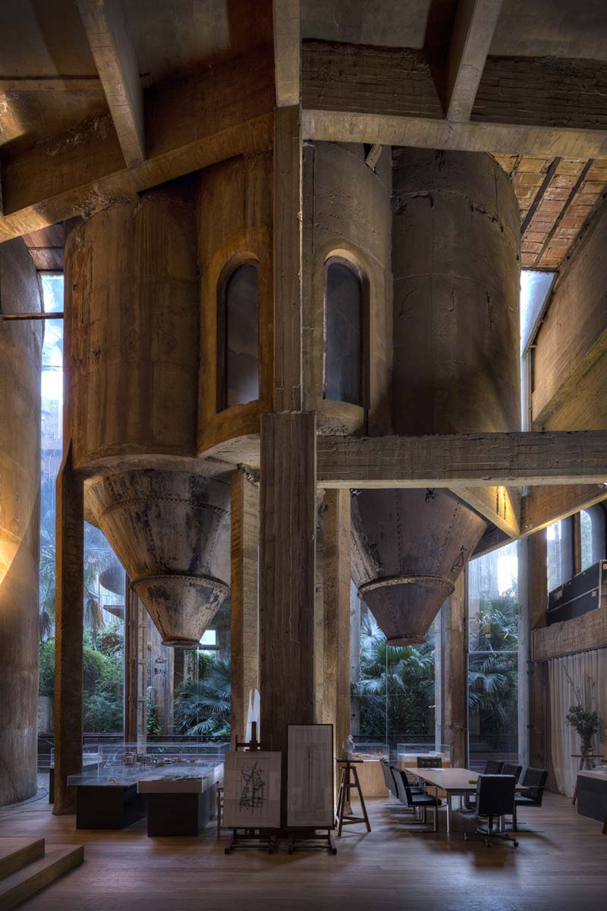

- 
La fabrica is a 3,100 m2 cement factory located near barcelona, spain, which serves as the unique backdrop to local architect ricardo bofill‘s studio and home. The factory, which was first built in the post world war I era, is an architectural timeline of transformative vernacular having expanded through various styles as new functions called for an expanded program. The complex, providing a beautiful and varied series of spaces spanning from brutalist to surrealist with an industrial flavor, underwent a series of processes that converted the existing structure into a studio, gallery, garden, and home- a re-purposed city within an abandoned factory slowly engulfed by vegetation.